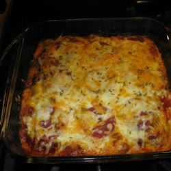

Spaghetti Recipe

A quick and easy spaghetti recipe!
This is a very easy and cheap spaghetti recipe made in a deep dish
Ingredients
- 8 ounces spaghetti, cooked and drained
- 2 slices shredded mozzarella cheese
- 2 large eggs eggs, slightly beaten
- 1 teaspoon salt
- ¼ teaspoon ground black pepper
- 1 (26 ounce) jar RAGÚ® Old World Style® Traditional Sauce
Steps
- Preheat oven to 375 degrees F. Combine spaghetti, eggs, 1/2 cup cheese, salt and pepper in large bowl. Evenly spread into greased 13 x 9-inch baking dish. Evenly top with Pasta Sauce, then remaining cheese.
- Bake 35 minutes or until bubbling. Let stand 5 minutes before serving.